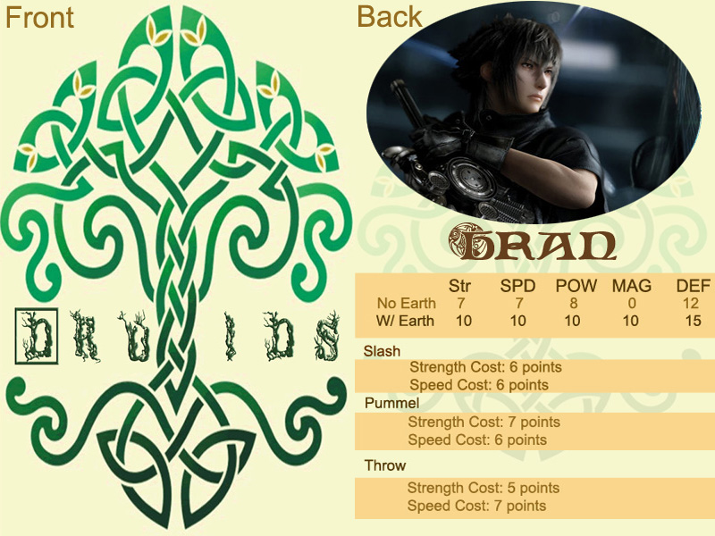
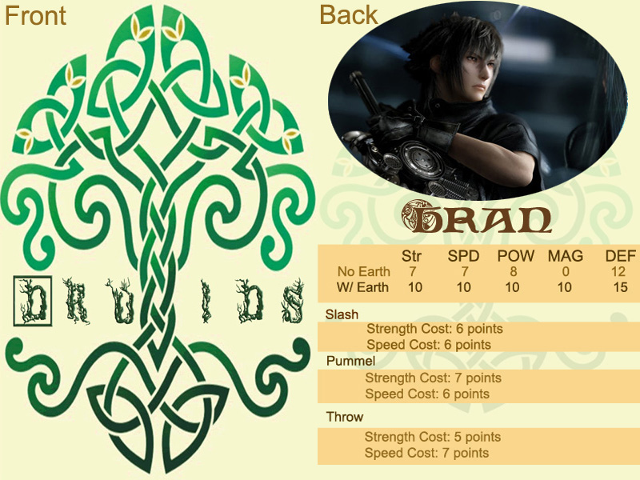

Background Story on the game
The humans are not all that is out there. There is another world co-existing along side of the human race. Supernaturals do exist, and they are at war with each other. Druids, Gods of varying Pantheons, and the Cursed are three factions whom have lived in peace for many years. Then one day an argument breaks out within the Druid Faction, and strife ripples out to the other factions.
The druids have lived for centuries caring for the earth. For their dedication and hard work the earth gives them power and strength. This power is to be used to help and defend the earth. The druids keep the balance in all things.
Strife began within this faction during a war between rival kingdoms. Both sides of this war had druids helping and fighting. A sacred object was dropped on the battlefield and found by a lone druid named Shiohan, who collected it and left. Angus, the keeper of this artifact, wanted it back and went after Shiohan.
Shiohan ran for many years keeping to desert areas and avoiding contact with other druids. Angus soon found him and sought help from other factions to help retrieve the artifact for him. Angus enlisted help from the cursed, being the witches. Shiohan, seeing the battle to come, sought help from the cursed too. He enlisted Werewolves.
The two druids, and their companions, met on a battlefield of forested land. Battle ensued. Angus and his little army was no match for Shiohan and his wolves. Angus and the witches were defeated and Shiohan left with the Artifact. Word spread about the battle causing all factions to distrust the others.
The distrust spread like a disease. The cursed learned of the abilities of Druid to plain walk, and informed the Gods that even they were not safe. The Gods struck out to all factions to show their superiority. This action led to vampires joining druids against the Gods, while fighting each other, to gain vengeance. Chaos ensued and factions were fighting other factions and fighting within their own.
 
